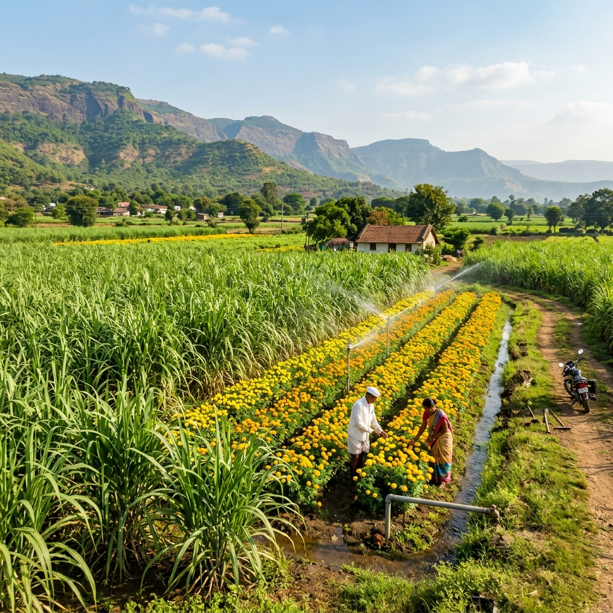
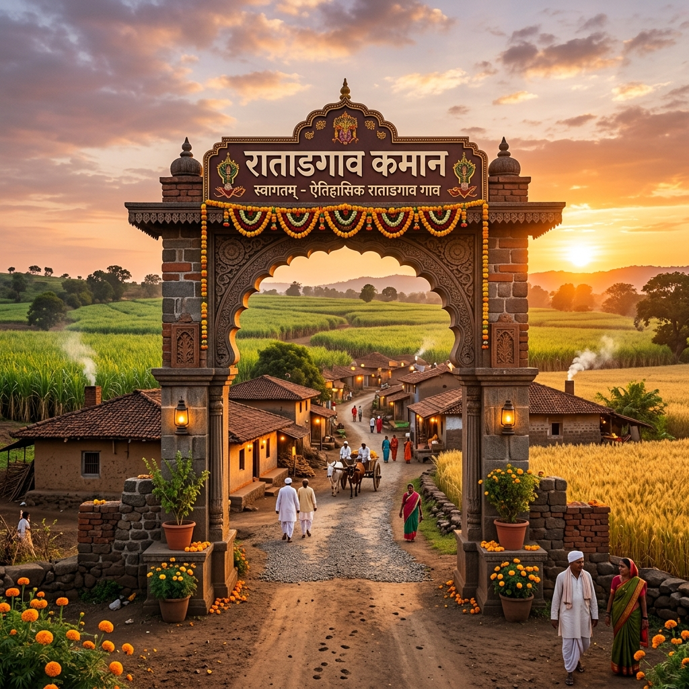
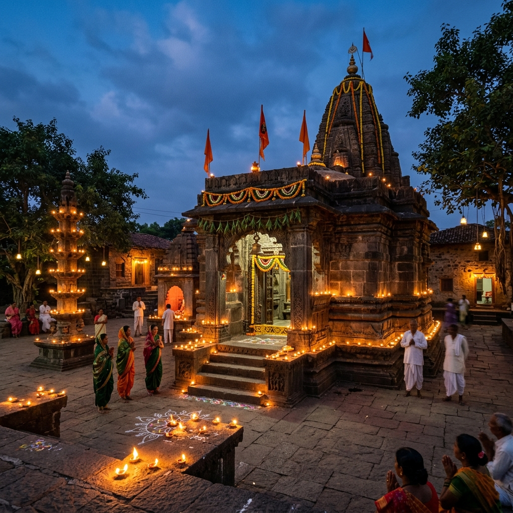
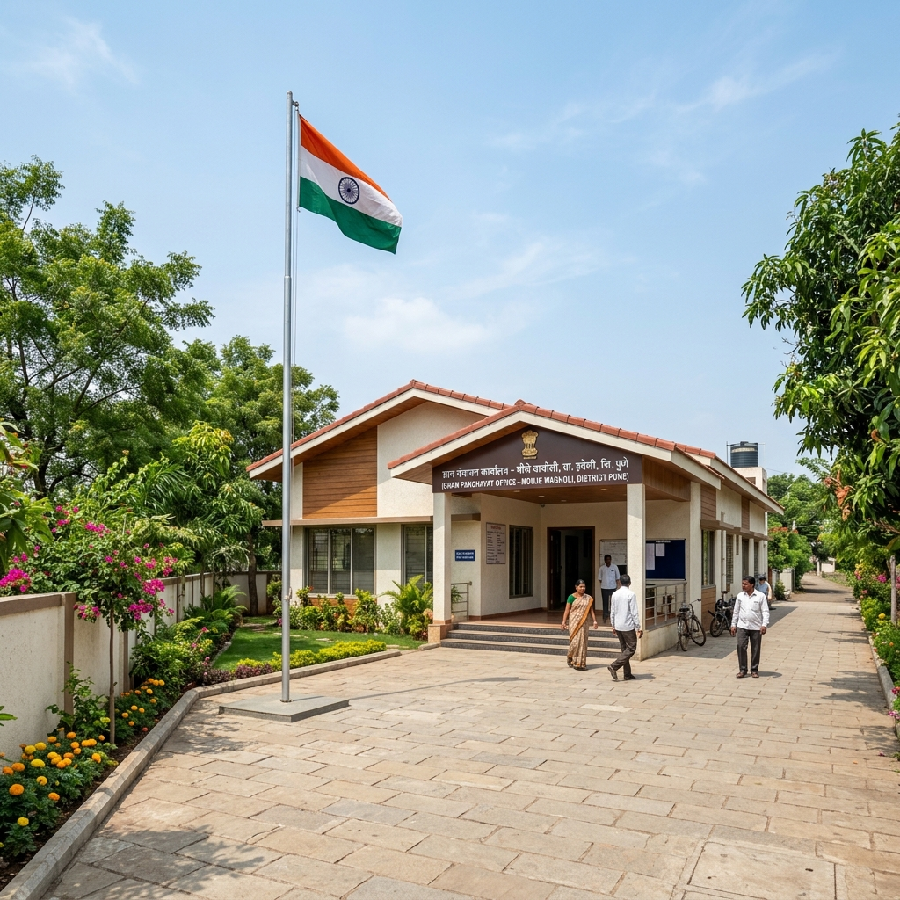

Caption text
पारंपारिक संस्कृतीचा आदर आणि आधुनिक तंत्रज्ञानाची कास धरणारे आमचे सुंदर गाव. चला, अनुभवूया रतडगावचा समृद्ध वारसा.
रतडगाव हे अहिल्यानगर (पूर्वीचे अहमदनगर) जिल्ह्यातील एक अत्यंत शांत, निसर्गरम्य आणि समृद्ध गाव आहे. या गावाला अनेक वर्षांचा ऐतिहासिक आणि सांस्कृतिक वारसा लाभलेला आहे. गावातील एकोपा आणि शांतताप्रिय वातावरण हे या परिसराचे मुख्य वैशिष्ट्य आहे.
"एकता, स्वच्छता आणि विकास" हे रतडगावचे ब्रीदवाक्य असून गावाने विविध शासकीय योजनांच्या माध्यमातून आदर्श गाव बनण्याच्या देशाने महत्त्वपूर्ण पावले उचलली आहेत.
गावाची भौगोलिक रचना शेतीसाठी अत्यंत सुपीक असून जवळून वाहणाऱ्या कालव्यांमुळे पाण्याची उपलब्धता उत्तम आहे. गावामध्ये शिक्षण, आरोग्य आणि पायाभूत सुविधांचा जलद गतीने विकास होत आहे.

रतडगावचे मुख्य वैभव येथील शेतीमध्ये आहे. काळी आणि कसदार जमीन तसेच कष्टकरी शेतकरी यांच्या संगमातून दरवर्षी विक्रमी पीक उत्पादन घेतले जाते. गावातील सुमारे ८०% कुटुंब प्रत्यक्ष किंवा अप्रत्यक्षपणे शेतीवर अवलंबून आहेत.
पाण्याचा सुनियोजित वापर करण्यासाठी गावचे शेतकरी मोठ्या प्रमाणावर ठिबक सिंचन (Drip Irrigation) आणि तुषार सिंचन पद्धतींचा वापर करतात. सेंद्रिय शेतीकडे (Organic Farming) देखील तरुण शेतकऱ्यांचा कल वाढत आहे.
रतडगाव हे आपल्या धार्मिक सौहार्द आणि पारंपरिक सणांसाठी प्रसिद्ध आहे. गावातील मंदिरे हे ग्रामस्थांच्या श्रद्धेचे आणि एकत्र येण्याचे मुख्य केंद्र आहेत.
दरवर्षी चैत्र पौर्णिमेला हनुमान जन्मोत्सवानिमित्त गावात भव्य जत्रेचे आयोजन केले जाते. या निमित्ताने महाप्रसाद, कुस्त्यांची दंगल (हगामा), आणि मनोरंजक सांस्कृतिक कार्यक्रमांचे आयोजन केले जाते. या सणासाठी बाहेरगावी गेलेले सर्व ग्रामस्थ आवर्जून एकत्र येतात.
ग्रामस्थांच्या लोकवर्गणीतून आणि उत्स्फूर्त श्रमदानातून नुकतेच गावात भव्य 'श्री संत सावता महाराज मंदिर' उभारण्यात आले आहे. हे मंदिर गावकऱ्यांच्या एकत्र येण्याचे, सहकार्याचे आणि सामूहिक श्रमाचे एक उत्कृष्ट प्रतीक आहे.
गावातील 'श्री दत्त मंदिर' हे ग्रामस्थांचे मोठे श्रद्धास्थान आहे. दरवर्षी मार्गशीर्ष पौर्णिमेला येथे दत्त जयंती सोहळा अत्यंत उत्साहात साजरा केला जातो. या काळात मंदिरात महाप्रसाद, कीर्तन आणि भजनाचे भव्य आयोजन केले जाते.
गणेशोत्सवामध्ये संपूर्ण गावात उत्साहाचे वातावरण असते. विविध मंडळे समाजोपयोगी उपक्रम राबवून सण साजरा करतात. विसर्जन मिरवणुकीत पारंपरिक लेझीम पथकाचे सादरीकरण हे मुख्य आकर्षण असते.
आमची ग्रामपंचायत पूर्णपणे डिजिटल झाली असून ग्रामस्थांना लागणारे सर्व दाखले आणि कागदपत्रे ऑनलाईन पद्धतीने जलद गतीने पुरवली जातात.
गावातील जिल्हा परिषद प्राथमिक शाळा डिजिटल वर्गांनी सज्ज असून विद्यार्थ्यांना दर्जेदार मोफत शिक्षण दिले जाते. तसेच क्रीडांगणाची उत्तम सोय आहे.
गावामध्ये सुसज्ज प्राथमिक आरोग्य उपकेंद्र कार्यरत आहे, जिथे मोफत वैद्यकीय तपासणी, लसीकरण आणि प्रथमोपचाराची २४ तास सोय आहे.
आमच्या सुंदर गावातील काही मनमोहक दृश्ये



ग्रामपंचायत कार्यालय रतडगाव, मु.पो. रतडगाव,
तालुका व जिल्हा: अहिल्यानगर, महाराष्ट्र - ४१४००१
+९१ २४२-२५६७८९ (कार्यालय)
+९१ ९८७६५ ४३२१० (ग्रामसेवक)
contact@ratadgaon.org.in
grampanchayat.ratadgaon@gmail.com